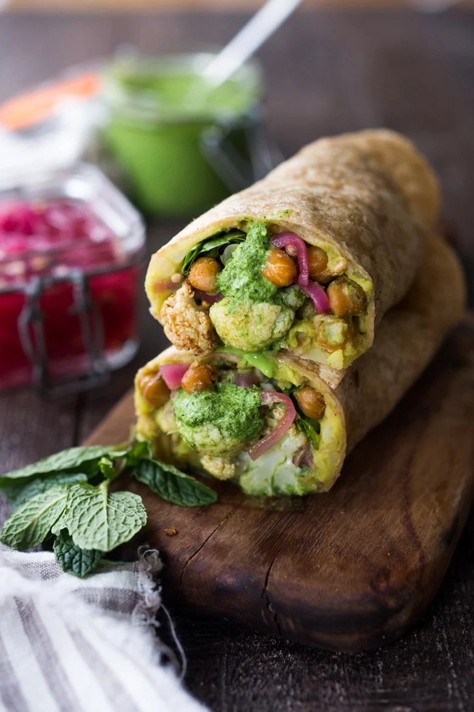
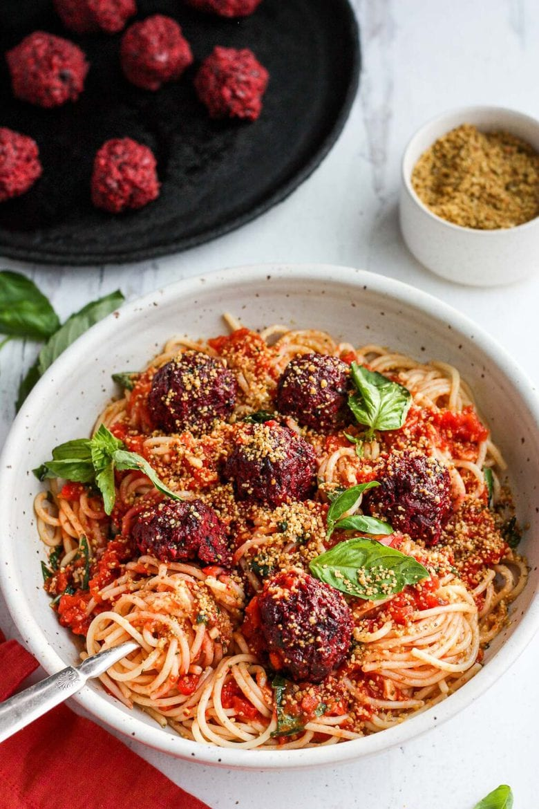
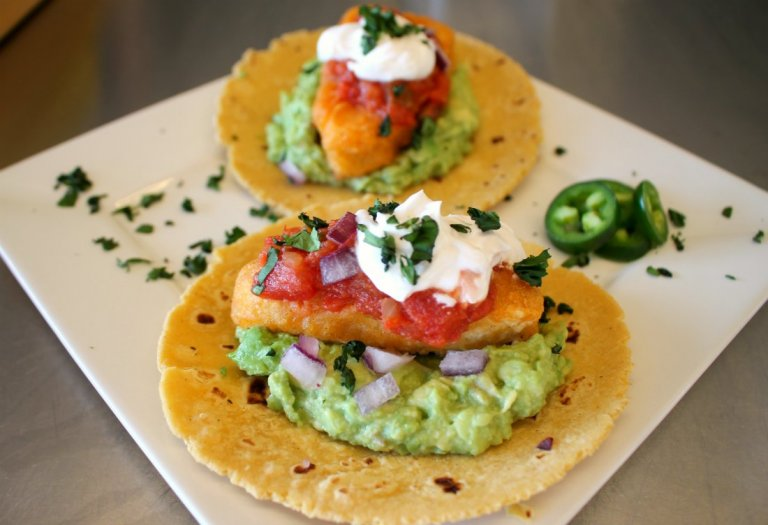
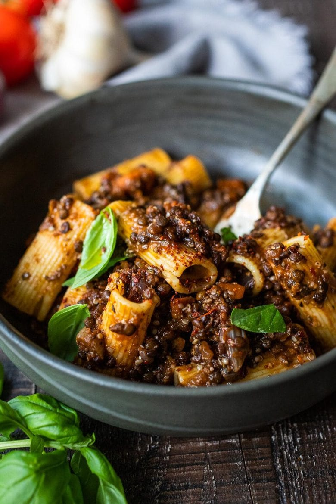
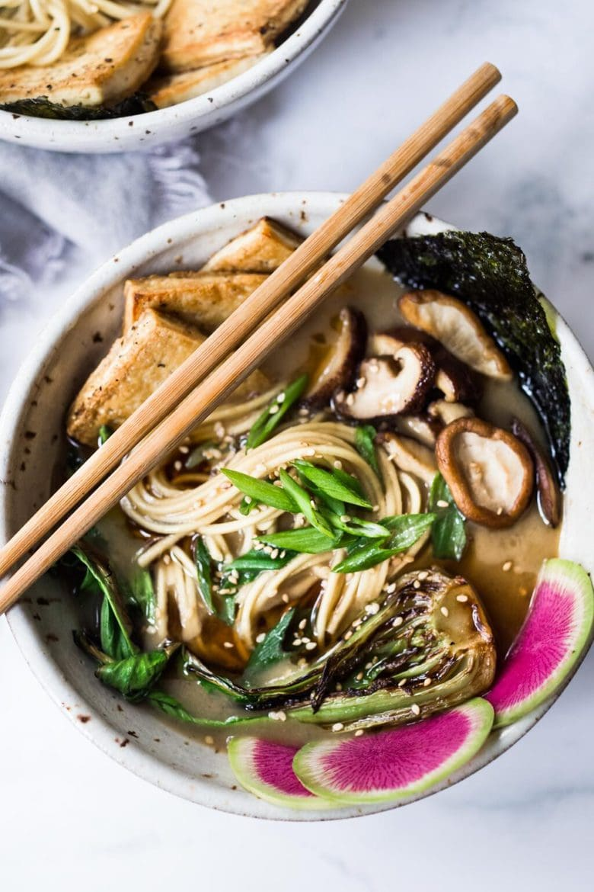

An aromatic Indian rice dish with vegetables and chickpeas- infused with Indian spices. A quick and easy vegan dinner recipe, perfect any time of year. Serve with Cilantro-Mint Chutney.

Frankies! (Bombay Buritos)
An aromatic Indian rice dish with vegetables and chickpeas- infused with Indian spices. A quick and easy vegan dinner recipe, perfect any time of year. Serve with Cilantro-Mint Chutney.

Spagetti and Vegan Meatballs
A beautiful twist on the comforting familiar classic. Beets, black beans, walnuts and basil make these plant-based meatballs scrumptious and so satisfying. Sprinkle with Vegan Cheesy Sprinkle!

Battered Fish Tacos
Plant-based fish sticks are made with hearts of palm and dried nori, which give the faux-fish that authentic seafood flavor.

Lentil Bolognese
Hearty and meaty but not in-your-face meaty. It’s rich, thick, and sticks to your ribs.
Tofu Pad Thai
Traditionally made with rice noodles (which were borrowed from Chinese cuisine), egg, tofu, dried shrimp, and a salty-sweet-sour sauce.

Vegan Ramen
Vegan Ramen with Miso Shiitake Broth– an umamilicious bowl of warming, soothing ramen with shiitake mushrooms, crispy tofu, Bok Choy and scallions. Plus a simple tip to making this “creamy”